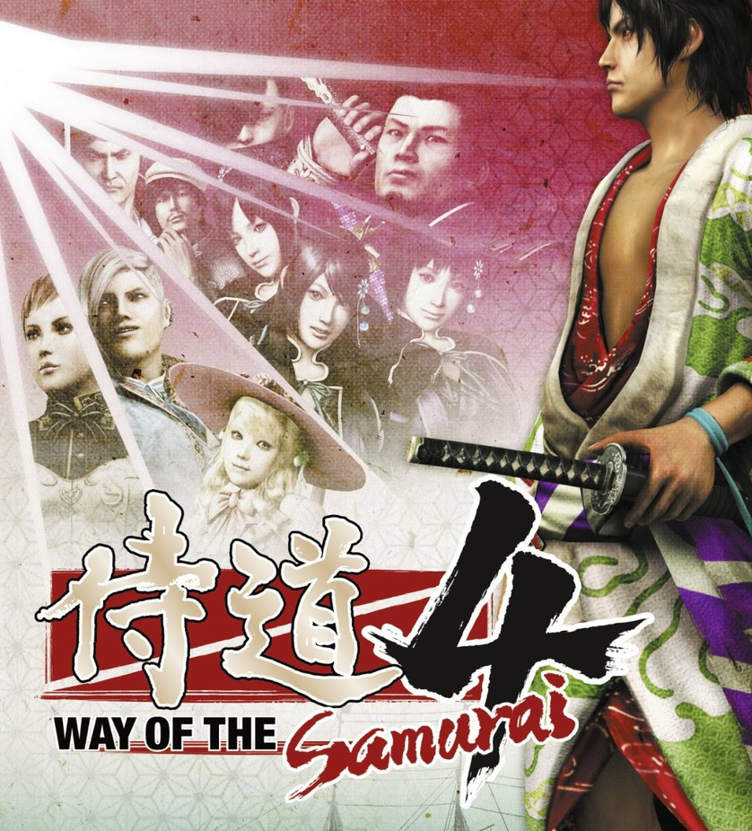

Way of the Samurai 4
Way of the Samurai 4
Details
|  | |
| Playtime | Not Played |
| Last Activity | Never |
| Added | 14.4.2021 19:48:46 |
| Modified | 01.5.2021 18:11:53 |
| Completion Status | Not Played |
| Source | Steam |
| Platform | PC |
| Release Date | 23.7.2015 |
| Community Score | 77 |
| Critic Score | 72 |
| User Score | |
| Genre | Action Adventure |
| Developer | ACQUIRE Corp. |
| Publisher | Ghostlight LTD |
| Feature | Achievements Cloud Saves Partial Controller Support Single-Player Trading Cards |
| Links | Community Hub Discussions Guides News Store Page PCGamingWiki Achievements |
Description
The Way of the Samurai series is widely renowned for allowing players to make far-reaching decisions that can radically alter the course of the story and this, the fourth entry in this thrilling series and previously exclusive to the PS3, is no exception! Now all the sword wielding action, adventure and drama of the Way of the Samurai series comes to PC for the very first time, continuing the series’ blend of customization, exploration, action gameplay and quirky humour.
Way of the Samurai 4 takes place in the humble port town of Amihama during the mid 19th Century, several years after the arrival of the “black ships” from the West ended Japan’s long history of cultural isolation. Amihama’s downtown area has slowly been converted to a “Little Britain,” complete with European-styled buildings, occupied by an influx of adventurous foreign settlers. Not everyone welcomes these new residents though, and three distinct factions with opposing ideals begin to take shape.
You must take on the role of a master-less samurai looking to establish yourself in this conflicted land of opportunity and uncertainty. It is up to you to decide which faction to support in an almighty conflict amongst the region’s three powers, and so direct the course of Japan’s history.
Will you aid the shogunate pro-government in their attempts to keep the peace and establish cordial relations with the foreign contingent?
Will you help the nationalistic isolationists in their attempts to exile this potential threat to the Japanese way of life?
Or will you ally with the foreigners directed by the British Navy in their attempts to establish silk trade and foster cultural exchange?
Who will you support? Who will you betray? Become the ultimate bastion of virtue or the ultimate disgrace to humanity, and do it however you'd like. The choice is entirely your own...
Come join the denizens of this conflicted harbour and enjoy all the series staples you've come to expect from Way of the Samurai:
• Branching storylines with multiple endings
• Dynamic combat system
• Vast array of melee and gunpowder weaponry
• Extensive character customization
• Key event decision making
• Sword collecting
• Original Japanese voiceover with English subtitles
This PC conversion also features a number of improvements over the original, ensuring that PC gamers receive the best gaming experience possible:
• Improved user interface with both gamepad and keyboard support
• 8 stunning Steam Trading Cards to collect!
• Steam Achievements
• Cloud Saves
What the reviewers had to say about the PS3 version
“Ridiculously over-the-top Japanese historical setting combined with samurai badassery and an open-world, Choose Your Own Adventure–style interface.” - EGM
“I can recommend this game to anyone who is a diehard fan of samurais and enjoys a good combat system wrapped around a unique way of telling a story.” - Darkstation
“...a unique, rewarding experience that to date, can't be found anywhere else.” – Destructoid
Way of the Samurai 4 takes place in the humble port town of Amihama during the mid 19th Century, several years after the arrival of the “black ships” from the West ended Japan’s long history of cultural isolation. Amihama’s downtown area has slowly been converted to a “Little Britain,” complete with European-styled buildings, occupied by an influx of adventurous foreign settlers. Not everyone welcomes these new residents though, and three distinct factions with opposing ideals begin to take shape.
You must take on the role of a master-less samurai looking to establish yourself in this conflicted land of opportunity and uncertainty. It is up to you to decide which faction to support in an almighty conflict amongst the region’s three powers, and so direct the course of Japan’s history.
Will you aid the shogunate pro-government in their attempts to keep the peace and establish cordial relations with the foreign contingent?
Will you help the nationalistic isolationists in their attempts to exile this potential threat to the Japanese way of life?
Or will you ally with the foreigners directed by the British Navy in their attempts to establish silk trade and foster cultural exchange?
Who will you support? Who will you betray? Become the ultimate bastion of virtue or the ultimate disgrace to humanity, and do it however you'd like. The choice is entirely your own...
Come join the denizens of this conflicted harbour and enjoy all the series staples you've come to expect from Way of the Samurai:
• Branching storylines with multiple endings
• Dynamic combat system
• Vast array of melee and gunpowder weaponry
• Extensive character customization
• Key event decision making
• Sword collecting
• Original Japanese voiceover with English subtitles
This PC conversion also features a number of improvements over the original, ensuring that PC gamers receive the best gaming experience possible:
• Improved user interface with both gamepad and keyboard support
• 8 stunning Steam Trading Cards to collect!
• Steam Achievements
• Cloud Saves
What the reviewers had to say about the PS3 version
“Ridiculously over-the-top Japanese historical setting combined with samurai badassery and an open-world, Choose Your Own Adventure–style interface.” - EGM
“I can recommend this game to anyone who is a diehard fan of samurais and enjoys a good combat system wrapped around a unique way of telling a story.” - Darkstation
“...a unique, rewarding experience that to date, can't be found anywhere else.” – Destructoid